Utilisateur¶
Gestion du compte¶
L’utlisateur, une fois connecté, peut accéder à l’espace “Mon compte” disponible en cliquant sur l’image utilisateur située à droite de la barre de navigation principale. La déconnexion du site s’effectue en cliquant sur “Déconnexion” situé en dessous de l’accès à l’espace “Mon compte”.
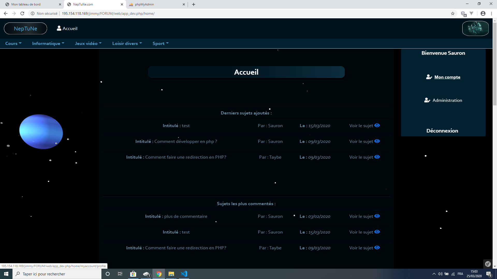Cet espace permet à l’utilisateur de modifier ses informations personnelles, sélectionner une image de profil, modifier son mot de passe et supprimer son compte.
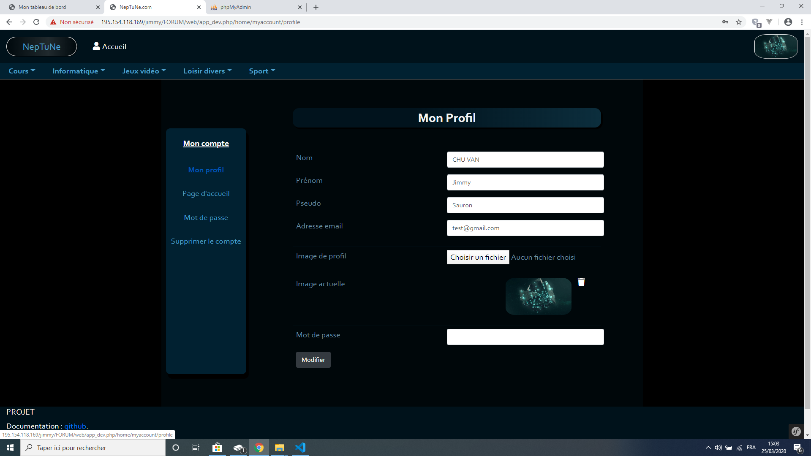Création des sujets et des commentaires¶
Pour créer un sujet, l’utilisateur doit sélectionner un thème à travers le bandeau de navigation situé en dessous du bandeau principal. Lorsqu’il cliquera sur un univers, parmis lesquels sont listés “Informatique” et “Jeux vidéo”, un bandeau de sélection apparaîtra et offrira à l’utilisateur la possibilité de sélectionner un thème ou une section.
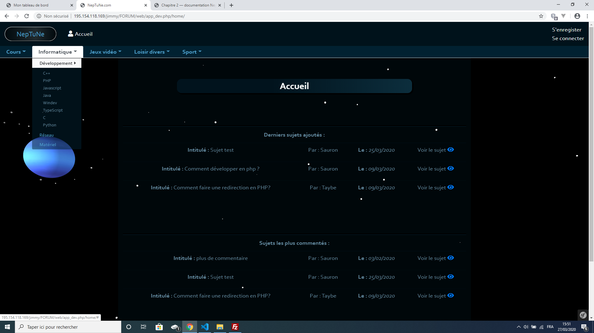Note
Pour l’univers “Informatique” plusieurs thèmes existes :
- Réseau
- Développement
Le thème réseau n’a pas de section tandis que le thème développement dispose de plusieurs sections (une par langage).
Une fois sur la section ou le thème selectionné(e), une page apparaît avec la liste des sujets existant. Pour créer un nouveau sujet, cliquez sur le bouton “nouveau” situé en dessous de la liste des sujets.
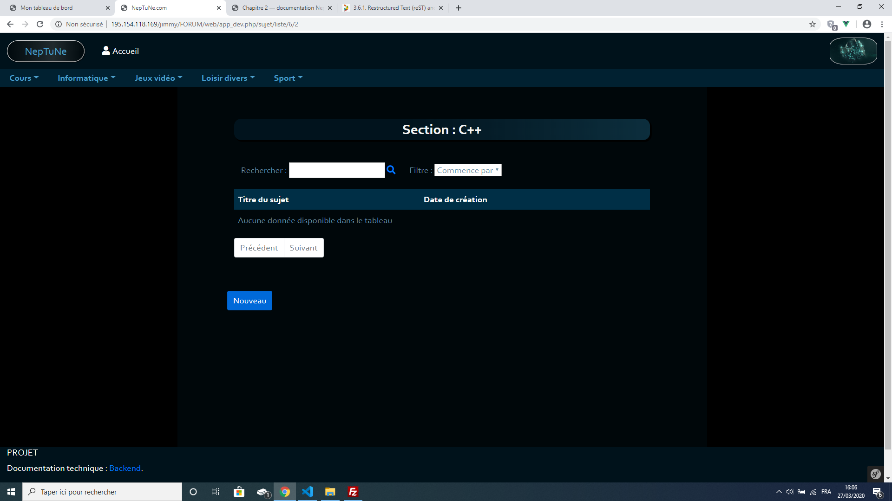Sur la page suivante, saisissez le titre du sujet et votre question. Vous avez la possibilité d’illustrer celle-ci en ajoutant jusqu’à trois images.
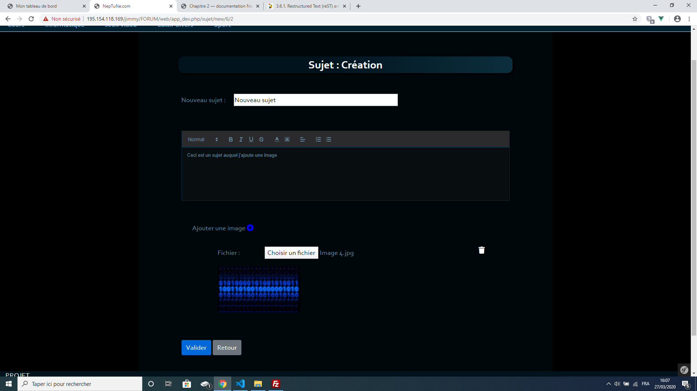Vous retrouverez le sujet créé dans la liste des sujets précédentes. Cliquez sur le logo en forme d’oeil, sur la liste, pour accéder au sujet.
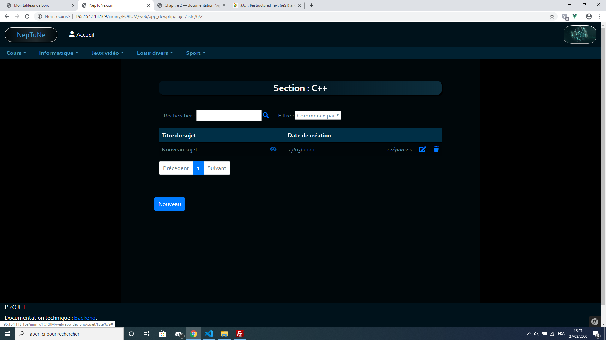Le sujet précédemment créé ainsi que le commentaire et les images apparaîtront (optionnelles).
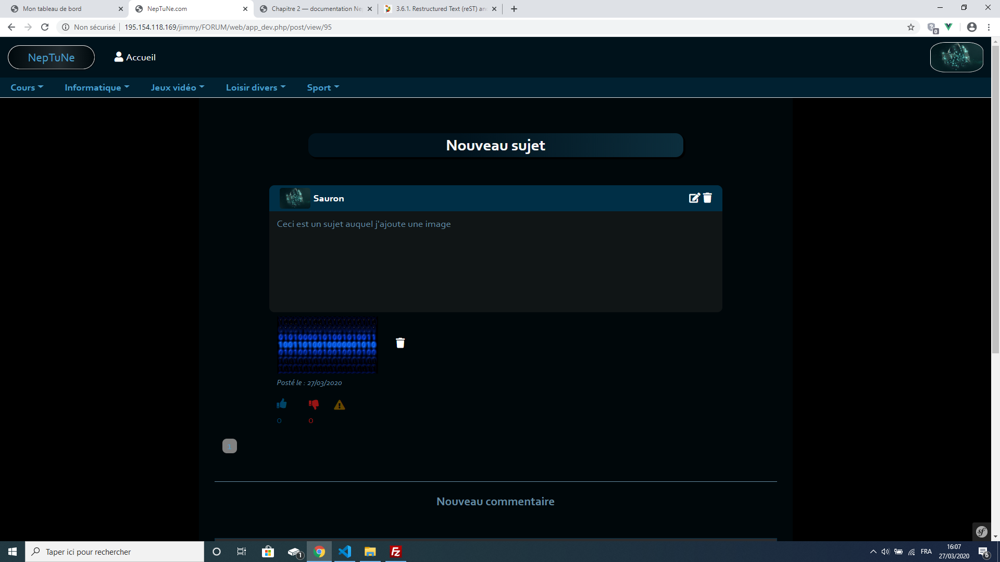Vous pouvez saisir de nouveaux commentaires, avec des images dans la limite de trois, grâce à la zone de saisie disponible en bas de la page.
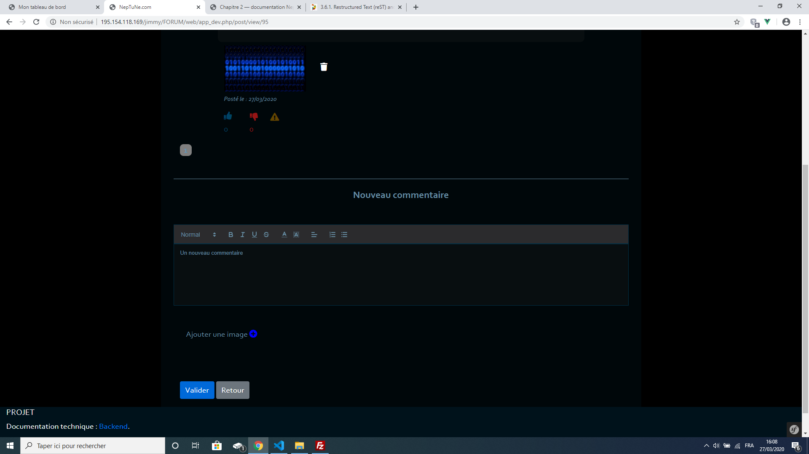Les nouveaux commentaires saisis apparaîtront à la suite des derniers commentaires du sujet.
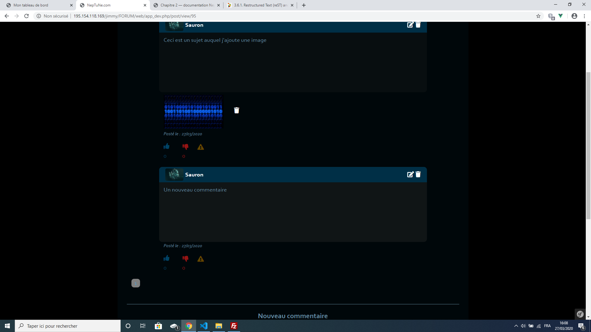Les commentaires que vous avez créé sont entièrement modifiables (en cliquant sur le bouton à gauche de la corbeille sur l’entête du commentaire dans laquelle apparaît votre pseudonyme). Vous pouvez modifier le commentaire, supprimer les images qui y sont associées en ajouter (dans la limite de trois images par commentaire) ou les supprimer. La corbeille supprime entièrement votre commentaire images incluses.
Les boutons en forme de “pouce” en bas d’un commentaire servent respectivement à aimer ou à ne pas aimer un commentaire. Le triangle quant-à lui est là pour signaler un commentaire. Le commentaire signalé sera analysé par un administrateur.
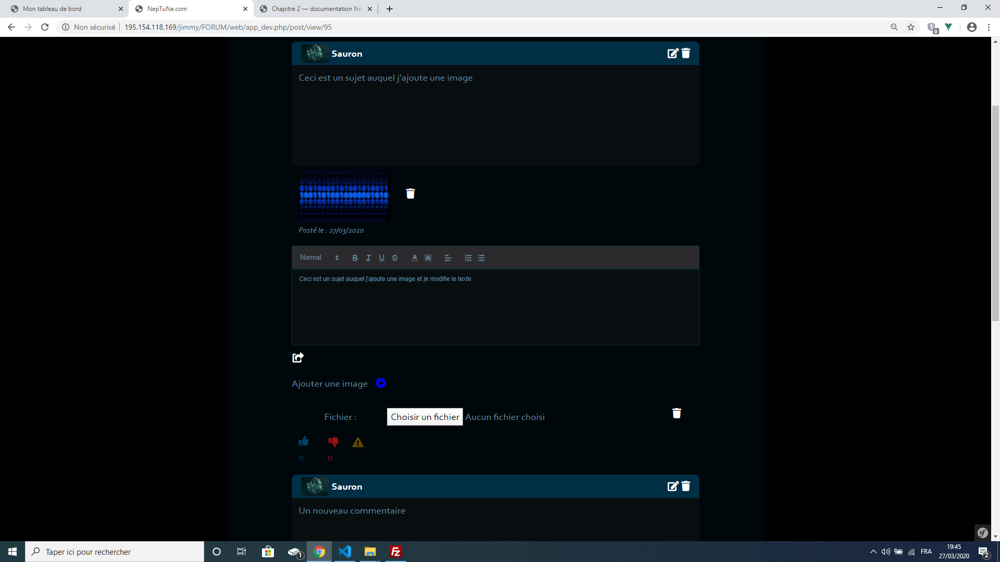Gestion de la page d’accueil¶
La page d’accueil peut être personnalisable. Vous pouvez choisir de voir votre activité, qui fait référence à vos consultations, ou voir la quantité de vos commentaires postés qui ont été aimés ou non. Ce paramétrage de la page d’accueil est accessble dans votre espace “Mon compte”, section “Page d’accueil”.
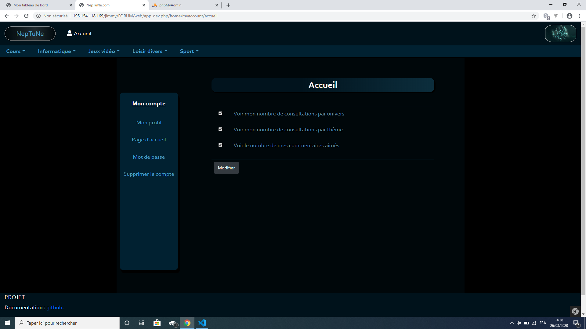L’activité cochée correspondra à un graphique spécifique qui apparaîtra sur votre page d’accueil.
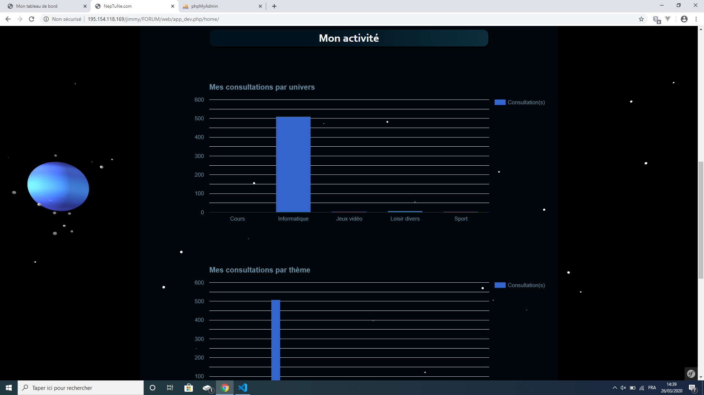 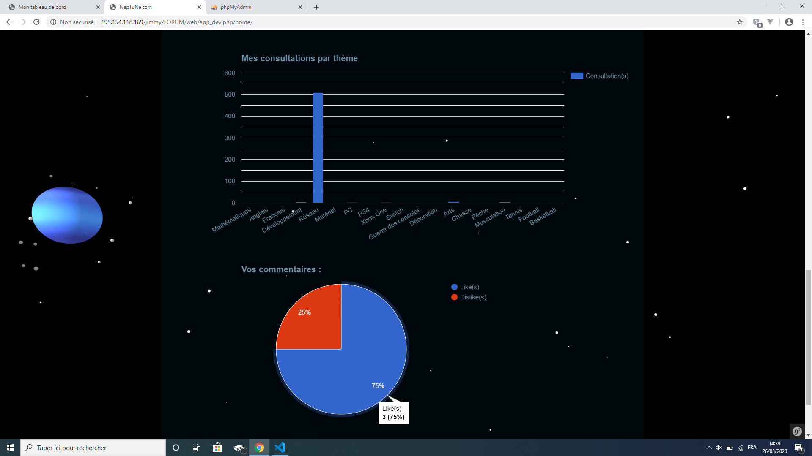